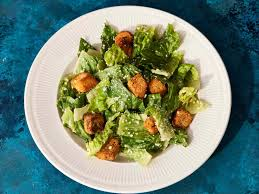

Caesar Salad

Description
A Caesar salad (also spelled Cesar, César and Cesare) is a green salad of romaine lettuce and croutons dressed with lemon juice (or lime juice), olive oil, eggs, Worcestershire sauce, anchovies, garlic, Dijon mustard, Parmesan and black pepper.
Ingredients
- 1 large or 2 small heads of romaine lettuce
- Parmesan cheese, shredded or shaved
- Crisp croutons – homemade can be made several days ahead. The recipe below makes enough for 2 salads.
- Caesar salad dressing – homemade is best and here is our favorite store-bought dressing in a pinch
Steps
- Make the homemade croutons. Tear some crusty bread into bite-sized pieces, toss with olive oil, salt and pepper, and bake until crispy.
- Make the Caesar dressing. I usually just make my dressing in a traditional blender since I’m working with whole anchovies, but see other options here for how to make it by hand or with an immersion blender instead.
- Toss the salad. In a large mixing bowl, combine the lettuce, homemade croutons, and Parmesan. Drizzle evenly with your desired amount of dressing, then toss until combined.
- Serve. Then sprinkle each serving with some extra Parmesan and freshly-cracked black pepper and enjoy!